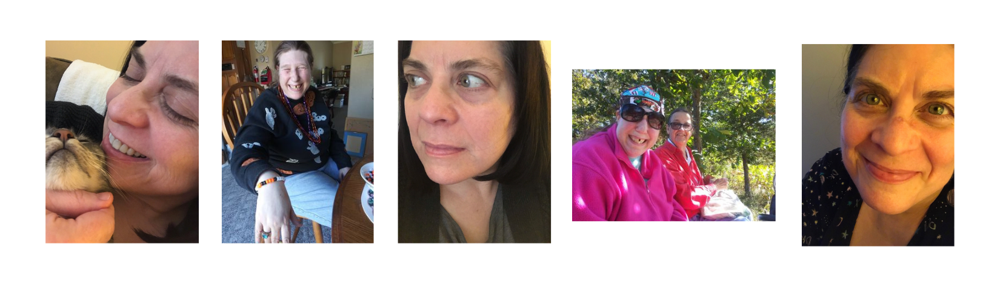

COVID-19 upended life for most Americans in March, but it has hit some harder than others. The disabled community faces a unique set of obstacles in everyday life, and many of those challenges have been further complicated by the pandemic.
The CDC warns that some people with disabilities might be at a higher risk of infection if they have underlying medical conditions. In the time of social distancing, though, people with disabilites who need caregivers or "direct service providers" face additional challenges. The CDC set guidelines for those people, encouraging caregivers to frequently monitor their symptoms, wash their hands and disinfect surfaces. However, maintaining health precautions between patients and caregivers is just one of many challenges disabled people are facing right now. This website tells the stories of the pandemic's impact on the disabled community. Make sure to check the community resouces page to see how you can help or how to get help if you need it.
